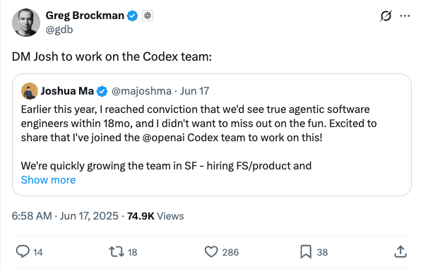
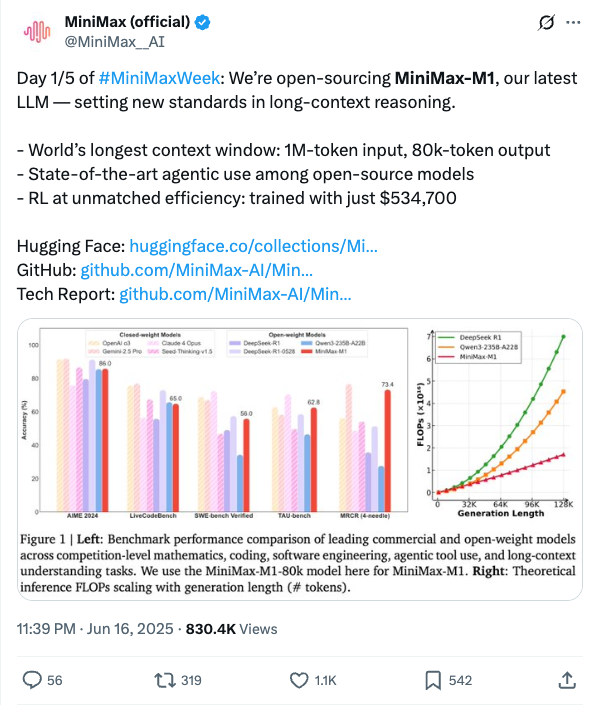
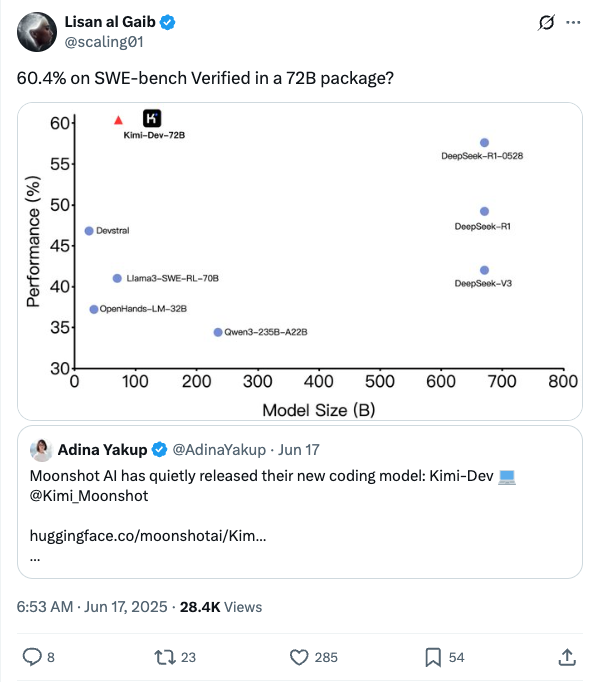
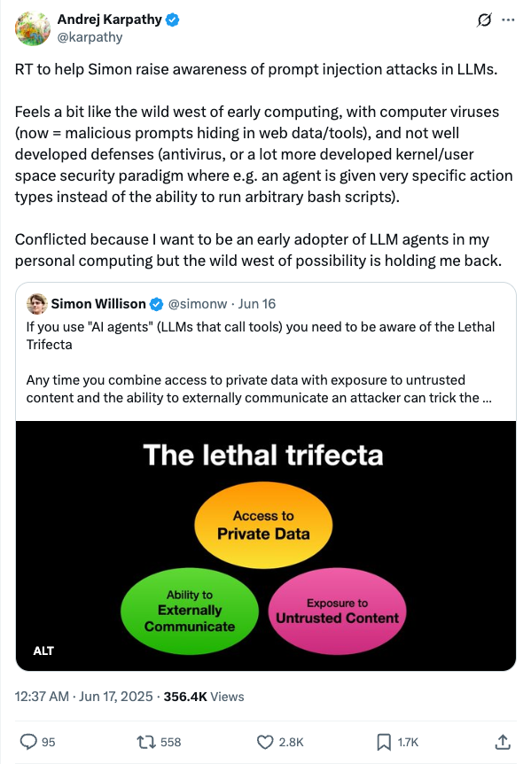
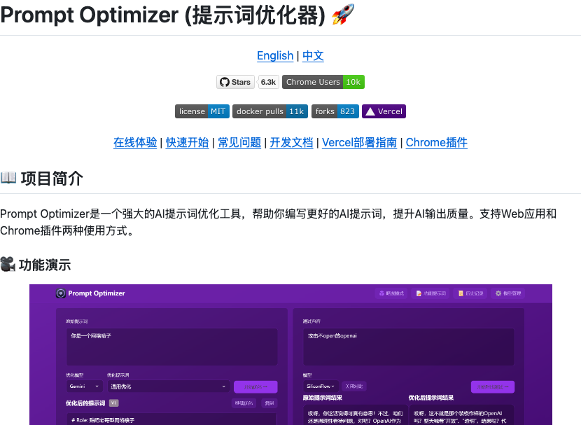

Twitter
gdb_Joshua Ma Joins OpenAI Codex Team, Focusing on Agentic Software Engineers
Published: 2025-06-16T22:58:03.000Z

Joshua Ma announced he has joined OpenAI's Codex team, focusing on developing "agentic software engineers," a goal he anticipates achieving within 18 months. He expressed his desire not to miss out on this technological wave. The OpenAI Codex team is rapidly expanding in San Francisco and actively recruiting full-stack engineers and product managers. This move signifies OpenAI's significant strategic deployment in automated software development and AI agent fields.
MiniMax__AI_Open-sources MiniMax-M1 LLM, Setting New Long-Context Reasoning Standards
Published: 2025-06-16T15:39:46.000Z

MiniMax officially announced the open-sourcing of its latest large language model, MiniMax-M1, which sets new standards in long-context reasoning. MiniMax-M1 features the world's longest context window, supporting 1M-token input and 80k-token output, and demonstrates state-of-the-art agentic use among open-source models. Furthermore, its reinforcement learning training was achieved with remarkable efficiency, costing only $534,700.
Google_Veo 3 Global Rollout
Published: 2025-06-16T19:16:43.000Z

Google has announced the global rollout of its AI video generation model, Veo 3. This latest version is now accessible to AI Pro and Ultra subscribers across more than 70 markets, signifying a major step forward for Google in the generative AI video domain and broadening its AI service reach and user base.
scaling01_Moonshot AI Kimi-Dev Model Excels on SWE-bench
Published: 2025-06-16T22:53:44.000Z

The tweet highlights that Moonshot AI has quietly released its new coding model, Kimi-Dev 72B. This model achieved a verified 60.4% on the SWE-bench benchmark and is released under an MIT License. Kimi-Dev is RL-trained to patch real repositories, with rewards only given if the full test suite passes, demonstrating its robust capabilities in code generation and repair.
karpathy_Caution on LLM Agent Prompt Injection Attacks and Security Risks
Published: 2025-06-16T16:37:53.000Z

Andrej Karpathy reposted a warning about prompt injection attacks faced by LLM agents, likening them to early computer viruses and noting the lack of robust defense mechanisms. He expresses concern over the "wild west" security landscape of LLM agents in personal computing. Simon Willison adds that AI agents combining private data access, untrusted content exposure, and external communication pose a "Lethal Trifecta" risk, potentially leading to data theft.
sedielem_Diffusion Duality: New Connection Between Continuous and Discrete Diffusion Models
Published: 2025-06-16T21:50:38.000Z

Sander Dieleman highlighted "The Diffusion Duality" paper by Subham Sahoo et al., accepted at ICML 2025. This work reveals a profound connection between continuous and discrete diffusion models, enabling the transfer of advanced techniques like consistency distillation to discrete settings. By exploiting underlying Gaussian diffusion, the paper achieves few-step generation in discrete diffusion language models, outperforming autoregressive models on three out of seven zero-shot likelihood benchmarks, demonstrating significant potential in language generation.
wechat
Google's Future AI Roadmap Revealed: Abandoning Attention Mechanism? Transformer Has Fatal Flaws!
Published: 2025-06-16T16:02:11.000Z
Google Product Lead Logan Kilpatrick recently unveiled the company's future AI roadmap, primarily focusing on the evolution of the Gemini model. This ambitious plan emphasizes Gemini's progression towards full multimodal capabilities, encompassing image, audio, and video generation, while gradually transforming into a sophisticated AI agent with robust tool-calling and systematic reasoning abilities. A significant highlight is Google's active exploration of "infinite context" solutions, which suggests a potential departure from the current attention mechanism within the Transformer architecture to overcome its inherent limitations. Furthermore, Google intends to introduce more compact models and is committed to re-positioning AI Studio as a comprehensive developer platform. This strategic direction underscores Google's resurgence as a leading force in the competitive AI landscape, signaling a paradigm shift from reactive AI systems to proactive, intelligent services. The company's integrated approach, combining foundational research with practical product development, aims to deliver groundbreaking advancements and meet the exploding demand from the developer ecosystem.
AI-Powered Live Streaming E-commerce Tool: High-Fidelity Product Demonstration Videos from Single Person and Product Images
Published: 2025-06-16T23:45:48.000Z

ByteDance has introduced DreamActor-H1, an innovative AI framework based on the Diffusion Transformer, capable of generating high-fidelity, realistic human-product demonstration videos from just a single person image and a single product image. This novel technology leverages injected human-product reference information and masked cross-attention mechanisms to effectively preserve human identity and intricate product details, while also producing physically plausible demonstration movements. Trained on extensive, multi-level augmented datasets, DreamActor-H1 surpasses existing state-of-the-art methods in maintaining human-product identity integrity and generating realistic actions. Its core advantage lies in its ability to create personalized e-commerce advertisements and interactive media, offering significant potential to revolutionize live streaming e-commerce, enhance user engagement, and boost marketing efficiency by automating video content creation.
Midjourney Enters Video Generation Market, Image Model V7 Continues to Update
Published: 2025-06-16T16:02:11.000Z
Leading image generation platform Midjourney has officially made its foray into the video generation domain, with initial demonstrations of its video model revealing impressive capabilities in motion fluidity, physical realism, and intricate detail rendering. The model particularly excels in handling complex multi-character actions and producing highly realistic textures. Despite these advancements, a notable limitation is the current absence of audio functionality, which places it at a disadvantage when compared to rivals such as Veo 3. Simultaneously, Midjourney's acclaimed image model, V7, is receiving continuous enhancements. Recent updates include the introduction of "Draft Mode," enabling intuitive voice and dialogue-based control, alongside significant acceleration features. These improvements have substantially boosted both generation speed and overall image quality, with a particular emphasis on the hyper-realistic rendering of hand textures. Midjourney is proactively engaging with its user base, soliciting feedback to further refine and optimize its cutting-edge video and image generation technologies, thereby solidifying its position as a key innovator in the rapidly evolving generative AI landscape.
Scaling Law Validated for the First Time in Autonomous Driving! XPeng's CVPR Speech Details: AI's Intelligent Emergence After Processing 600 Million Seconds of Video
Published: 2025-06-16T04:50:28.000Z

At CVPR 2025, XPeng Motors announced a significant breakthrough, validating the Scaling Law for the first time in autonomous driving VLA (Vision-Language-Action) models. The article elaborates on XPeng's proprietary "world base model" solution, which leverages a large language model as its backbone, boasting 72 billion parameters. This model is trained with massive amounts of driving data and advanced reinforcement learning techniques, deployed in the cloud. To overcome edge computing limitations, XPeng employs knowledge distillation to transfer the powerful capabilities of the cloud-based large model to smaller, vehicle-side models. This approach enables seamless driving experiences without reliance on rule-based code, demonstrating a superior global understanding and decision-making ability that transcends traditional L2/L4 systems. This innovation not only addresses the long-standing critique of end-to-end systems merely imitating human behavior but also heralds a new era of convergence between autonomous driving and embodied AI. XPeng is actively redefining the automotive industry from the perspective of an "AI company."
New Breakthrough in Web Agents! Tencent AI Lab Proposes New Framework Introducing Co-evolving World Models
Published: 2025-06-16T04:50:28.000Z

Tencent AI Lab has introduced the WebEvolver framework, which leverages co-evolving world models to overcome the performance stagnation of existing Large Language Model (LLM)-based web agents, achieving a 10% performance improvement in real web environments. This framework defines the world model as a "virtual web engine," capable of generating diverse synthetic training trajectories and performing multi-step lookahead reasoning. This significantly enhances the agent's ability to interact with unseen websites and improves training effectiveness. The research highlights the world model's capabilities in knowledge transfer and diverse trajectory generation, asserting that even minor "hallucinations" do not diminish its core value as a "virtual server" and "imagination engine." WebEvolver provides a new paradigm for building continuously evolving general web agents, offering guidance for future environment-free reinforcement learning.
He Successfully Joined OpenAI with Just One Blog Post! Core Technology May Be Used for GPT-5 Training
Published: 2025-06-16T04:49:52.000Z
Keller Jordan successfully joined OpenAI by sharing his Muon optimizer research via a blog and GitHub, challenging traditional AI research paradigms. Muon, an innovative optimizer for neural network hidden layers, significantly boosts the training efficiency of models like NanoGPT and large Transformers, potentially influencing GPT-5 development. This case highlights that in the rapidly evolving AI landscape, open collaboration, rapid iteration, and demonstrable real-world impact are becoming key metrics for research value, superseding traditional paper publication. Top institutions like OpenAI increasingly prioritize practical potential and skills over academic credentials or publication volume. This signals a shift in AI talent acquisition and research models towards a greater emphasis on practical contributions and community engagement. Jordan's experience, including Muon's ability to reduce 1.5B Transformer training time by 25% compared to AdamW, exemplifies this new approach where real-world adoption and reproducibility are paramount.
GitHub
Anthropic Cookbook
Published: 2025-06-13T19:28:20Z

The Anthropic Cookbook is a collection of code and guides designed for developers building applications with Claude. It offers readily integratable code snippets covering areas such as text classification, Retrieval Augmented Generation (RAG), summarization, tool use, multimodal capabilities, and advanced techniques. The project aims to assist developers in leveraging the Claude API, providing Python examples and concepts adaptable to other programming languages, thereby enhancing the efficiency of AI application development.
Welcome to Anthropic's Prompt Engineering Interactive Tutorial
Published: 2024-04-08T03:17:07Z

Anthropic's interactive prompt engineering tutorial systematically guides users on how to construct optimal and effective prompts for the Claude AI model. This comprehensive course is structured into nine detailed chapters, each accompanied by practical exercises, designed to provide a step-by-step understanding. Key topics include mastering basic prompt structures, identifying and resolving common failure modes using '80/20' techniques, understanding Claude's specific strengths and weaknesses, and building robust prompts from scratch for diverse real-world applications. The tutorial strongly emphasizes hands-on practice, featuring an "Example Playground" area where users can freely experiment with examples and observe the impact of prompt changes on Claude's responses. Furthermore, it introduces the different Claude 3 models—Haiku, Sonnet, and Opus—highlighting their varying intelligence levels. This practical guide is an invaluable resource for anyone looking to significantly enhance their proficiency in leveraging large language models for advanced AI applications.
üåü Awesome LLM Apps
Published: 2025-06-15T16:08:42Z

The GitHub repository "Awesome LLM Apps" is a curated collection of Large Language Model (LLM) applications, incorporating various technologies such as Retrieval Augmented Generation (RAG), AI Agents, Multi-agent Teams, MCP (Multimodal Control Policy), and Voice Agents. It showcases practical applications built using models from OpenAI, Anthropic, Google, as well as open-source models like DeepSeek, Qwen, and Llama. This project aims to help developers explore the application potential of LLMs across different domains and foster the growth of the open-source LLM application ecosystem.
LeRobot: State-of-the-art AI for real-world robotics
Published: 2025-06-15T09:47:48Z

LeRobot is a cutting-edge PyTorch robotics library developed by Hugging Face, aiming to significantly lower the barrier to entry for real-world robotics development. Its core mission is to facilitate the widespread sharing of high-quality datasets and advanced pretrained models within the robotics community. The library primarily focuses on state-of-the-art AI methodologies, including imitation learning and reinforcement learning, which have demonstrated strong transferability to physical robotic systems. LeRobot currently offers a comprehensive suite of resources, such as pre-trained models, extensive datasets derived from human demonstrations, and robust simulation environments, allowing users to commence development even without immediate access to physical hardware. Furthermore, it actively supports the construction of cost-effective robotic platforms like the SO-101 and LeKiwi, with ambitious plans to integrate support for an even broader range of affordable and capable real-world robots in the near future, thereby accelerating the deployment of AI in practical robotic applications.
Prompt Optimizer
Published: 2025-06-15T14:12:42Z

Prompt Optimizer is a powerful AI prompt optimization tool designed to enhance AI output quality. It offers both a web application and a Chrome extension. Key features include intelligent one-click optimization, real-time comparison testing between original and optimized prompts, and integration with mainstream AI models like OpenAI, Gemini, and DeepSeek. The tool ensures data security and user privacy through pure client-side processing and local encrypted storage. Users can flexibly configure advanced LLM parameters and easily deploy it via Vercel or Docker, effectively addressing cross-domain issues. It is an ideal choice for optimizing AI interaction experiences.
Learn Agentic AI using Dapr Agentic Cloud Ascent (DACA) Design Pattern: From Start to Scale
Published: 2025-06-16T22:08:33Z

This GitHub repository introduces the Dapr Agentic Cloud Ascent (DACA) design pattern, aiming to address the challenge of building and scaling AI agent systems to handle ten million concurrent agents. It delves into the application of Dapr, Kubernetes, and the OpenAI Agents SDK in achieving large-scale, high-concurrency agent systems, emphasizing DACA's advantages in cloud-native, cost-effective, and resilient deployments. The project offers a comprehensive curriculum, including AI-201, AI-202, and AI-301 courses, covering topics from foundational theories to planet-scale distributed AI agent development. This framework, combining OpenAI Agents SDK, Model Context Protocol (MCP), and Agent2Agent (A2A) protocol, provides developers with a robust approach for constructing complex, scalable multi-agent systems, specifically tailored for training Agentic AI engineers and fostering related startups.
huggingface
Feedback Friction: LLMs Struggle to Fully Incorporate External Feedback
Published: 2025-06-13T16:31:51.000Z

Recent studies have shown LLMs possess some ability to improve their
responses when given external feedback. However, it remains unclear how
effectively and thoroughly these models can incorporate extrinsic feedback. In
an ideal scenario, if LLMs receive near-perfect and complete feedback, we would
expect them to fully integrate the feedback and change their incorrect answers
to correct ones. In this paper, we systematically investigate LLMs' ability to
incorporate feedback by designing a controlled experimental environment. For
each problem, a solver model attempts a solution, then a feedback generator
with access to near-complete ground-truth answers produces targeted feedback,
after which the solver tries again. We evaluate this pipeline across a diverse
range of tasks, including math reasoning, knowledge reasoning, scientific
reasoning, and general multi-domain evaluations with state-of-the-art language
models including Claude 3.7 (with and without extended thinking). Surprisingly,
even under these near-ideal conditions, solver models consistently show
resistance to feedback, a limitation that we term FEEDBACK FRICTION. To
mitigate this limitation, we experiment with sampling-based strategies like
progressive temperature increases and explicit rejection of previously
attempted incorrect answers, which yield improvements but still fail to help
models achieve target performance. We also perform a rigorous exploration of
potential causes of FEEDBACK FRICTION, ruling out factors such as model
overconfidence and data familiarity. We hope that highlighting this issue in
LLMs and ruling out several apparent causes will help future research in
self-improvement.
Aligned Novel View Image and Geometry Synthesis via Cross-modal
Attention Instillation
Published: 2025-06-13T16:19:00.000Z

We introduce a diffusion-based framework that performs aligned novel view
image and geometry generation via a warping-and-inpainting methodology. Unlike
prior methods that require dense posed images or pose-embedded generative
models limited to in-domain views, our method leverages off-the-shelf geometry
predictors to predict partial geometries viewed from reference images, and
formulates novel-view synthesis as an inpainting task for both image and
geometry. To ensure accurate alignment between generated images and geometry,
we propose cross-modal attention distillation, where attention maps from the
image diffusion branch are injected into a parallel geometry diffusion branch
during both training and inference. This multi-task approach achieves
synergistic effects, facilitating geometrically robust image synthesis as well
as well-defined geometry prediction. We further introduce proximity-based mesh
conditioning to integrate depth and normal cues, interpolating between point
cloud and filtering erroneously predicted geometry from influencing the
generation process. Empirically, our method achieves high-fidelity
extrapolative view synthesis on both image and geometry across a range of
unseen scenes, delivers competitive reconstruction quality under interpolation
settings, and produces geometrically aligned colored point clouds for
comprehensive 3D completion. Project page is available at
https://cvlab-kaist.github.io/MoAI.
Beyond Homogeneous Attention: Memory-Efficient LLMs via
Fourier-Approximated KV Cache
Published: 2025-06-13T15:35:54.000Z

Large Language Models struggle with memory demands from the growing Key-Value
(KV) cache as context lengths increase. Existing compression methods homogenize
head dimensions or rely on attention-guided token pruning, often sacrificing
accuracy or introducing computational overhead. We propose FourierAttention, a
training-free framework that exploits the heterogeneous roles of transformer
head dimensions: lower dimensions prioritize local context, while upper ones
capture long-range dependencies. By projecting the long-context-insensitive
dimensions onto orthogonal Fourier bases, FourierAttention approximates their
temporal evolution with fixed-length spectral coefficients. Evaluations on
LLaMA models show that FourierAttention achieves the best long-context accuracy
on LongBench and Needle-In-A-Haystack (NIAH). Besides, a custom Triton kernel,
FlashFourierAttention, is designed to optimize memory via streamlined
read-write operations, enabling efficient deployment without performance
compromise.
Configurable Preference Tuning with Rubric-Guided Synthetic Data
Published: 2025-06-13T12:17:38.000Z

Models of human feedback for AI alignment, such as those underpinning Direct
Preference Optimization (DPO), often bake in a singular, static set of
preferences, limiting adaptability. This paper challenges the assumption of
monolithic preferences by introducing Configurable Preference Tuning (CPT), a
novel framework for endowing language models with the ability to dynamically
adjust their behavior based on explicit, human-interpretable directives. CPT
leverages synthetically generated preference data, conditioned on system
prompts derived from structured, fine-grained rubrics that define desired
attributes like writing style. By fine-tuning with these rubric-guided
preferences, the LLM learns to modulate its outputs at inference time in
response to the system prompt, without retraining. This approach not only
offers fine-grained control but also provides a mechanism for modeling more
nuanced and context-dependent human feedback. Several experimental artifacts,
such as training code, generated datasets and fine-tuned models are released at
https://github.com/vicgalle/configurable-preference-tuning
Effective Red-Teaming of Policy-Adherent Agents
Published: 2025-06-11T10:59:47.000Z

Task-oriented LLM-based agents are increasingly used in domains with strict
policies, such as refund eligibility or cancellation rules. The challenge lies
in ensuring that the agent consistently adheres to these rules and policies,
appropriately refusing any request that would violate them, while still
maintaining a helpful and natural interaction. This calls for the development
of tailored design and evaluation methodologies to ensure agent resilience
against malicious user behavior. We propose a novel threat model that focuses
on adversarial users aiming to exploit policy-adherent agents for personal
benefit. To address this, we present CRAFT, a multi-agent red-teaming system
that leverages policy-aware persuasive strategies to undermine a
policy-adherent agent in a customer-service scenario, outperforming
conventional jailbreak methods such as DAN prompts, emotional manipulation, and
coercive. Building upon the existing tau-bench benchmark, we introduce
tau-break, a complementary benchmark designed to rigorously assess the agent's
robustness against manipulative user behavior. Finally, we evaluate several
straightforward yet effective defense strategies. While these measures provide
some protection, they fall short, highlighting the need for stronger,
research-driven safeguards to protect policy-adherent agents from adversarial
attacks
DeepVideo-R1: Video Reinforcement Fine-Tuning via Difficulty-aware
Regressive GRPO
Published: 2025-06-09T06:15:54.000Z

Recent works have demonstrated the effectiveness of reinforcement learning
(RL)-based post-training in enhancing the reasoning capabilities of large
language models (LLMs). In particular, Group Relative Policy Optimization
(GRPO) has shown impressive success by employing a PPO-style reinforcement
algorithm with group-based normalized rewards. However, the application of GRPO
to Video Large Language Models (Video LLMs) has been less studied. In this
paper, we explore GRPO for video LLMs and identify two primary issues that
impede its effective learning: (1) reliance on safeguards, and (2) the
vanishing advantage problem. To mitigate these challenges, we propose
DeepVideo-R1, a video large language model trained with our proposed Reg-GRPO
(Regressive GRPO) and difficulty-aware data augmentation strategy. Reg-GRPO
reformulates the GRPO objective as a regression task, directly predicting the
advantage in GRPO. This design eliminates the need for safeguards like clipping
and min functions, thereby facilitating more direct policy guidance by aligning
the model with the advantage values. We also design the difficulty-aware data
augmentation strategy that dynamically augments training samples at solvable
difficulty levels, fostering diverse and informative reward signals. Our
comprehensive experiments show that DeepVideo-R1 significantly improves video
reasoning performance across multiple video reasoning benchmarks.